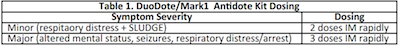

Recognition
- Beta blockers/calcium channel blockers: bradycardia, hypotension, hyperglycemia [CCB].
- Tricyclic antidepressants/sodium channel blocking agents: altered mental status, seizures, hypotension, QRS widening, prolonged QTC, tall R in aVr.
- Opioids: altered mental status, pinpoint pupils, respiratory depression, and hypotension.
- Organosphosphates/nerve agents: salivation, lacrimation, urination, defecation, GI distress, emesis [SLUDGE].
- Anticholinergics: tachycardia, hyperthermia, dilated pupils, mental status changes.
Treatment for all providers
- Routine patient care.
- Obtain history of ingestion/exposure including the substance ingested, route, quantity, time of ingestion, etiology (intentional, accidental, criminal), available medications/toxins in the home and the patient’s past medical history and medications.
- For known or suspected opioid overdose with respiratory depression/apnea in patients < 20 kg, administer NALOXONE 0.1 mg/kg IN (max dose 2 mg) every 3-5 min until adequate ventilation is restored. For patients ≥20 kg, administer NALOXONE 2 mg IN every 3-5 min until adequate ventilation is restored or 10 mg is administered.
- For known or suspected exposure to a organophosphate nerve agent or insecticide, (if available) administer DuoDote/Mark1 antidote kit(s) as indicated in table 1 below: 
- Consider consulting the Regional Center for Poison Control and Prevention (800 - 222-1222) for advice.
- For oral ingestions occurring less than one hour prior to EMS contact, contact MEDICAL CONTROL for authorization to administer ACTIVATED CHARCOAL 1 gm/kg (0.5 gm/lb) PO.
- Transport the patient to nearest appropriate Hospital Emergency Facility.
Cardiac/Advanced
- For suspected opioid overdose, if NALOXONE has not been administered or if additive doses are required, NALOXONE 0.1 mg/kg IN/IV/IM (max dose 2mg) every 3-5 minutes until adequate ventilation is restored. For patients ≥ 20 kg, administer NALOXONE 2 mg IN or 0.4 mg IV/IM every 3-5 minutes until adequate ventilation is restored or 10 mg is administered.
- For suspected tricyclic antidepressant or other sodium channel blocking agent toxicity, if seizures are present or the QRS is >0.09 sec, contact MEDICAL CONTROL for authorization to administer SODIUM BICARBONATE 1 mEq/kg IV/IO (repeat every five min as indicated).
- For suspected beta blocker or calcium channel blocker (CCB) toxicity, manage as indicated per Cardiac Dysrhythmia Protocol(s). Contact MEDICAL CONTROL for authorization to administer GLUCAGON 0.1 mg/kg IV/IO [max 5 mg] (may repeat X1 in 15 min) and CALCIUM CHLORIDE 20 mg/kg IV/IO or CALCIUM GLUCONATE 60 mg/kg IV/IO (may repeat X1).
- For suspected cyanide toxicity, contact MEDICAL CONTROL for authorization to administer (if available) HYDROXOCOBALAMIN 70 mg/kg IV/IO (5 gm max) in 250 ml NS over 15 min (in cardiac arrest the dose may be given over a shorter period).
- For suspected sympathomimetic/stimulant toxicity, contact MEDICAL CONTROL for authorization to administer MIDAZOLAM 0.05 mg/kg IV/IO/IN (may repeat X1 in 10 min) [do not administer if < 5 kg].
- For seizures following exposure to an organophosphate nerve agent or insecticide, manage per the age appropriate Pediatric Seizures Protocol.
Paramedic
- For suspected opioid overdose, if NALOXONE has not been administered or if additive doses are required, consider NALOXONE 0.1 mg/kg IN/IV/IM (max dose 2mg), repeat dose at 3-5 minute intervals until adequate ventilation is restored. For patients ≥20 kg, consider NALOXONE 2 mg IN or 0.4 mg IV/IM, repeat every 3-5 minutes until adequate ventilation is restored or 10 mg is administered.
- For suspected tricyclic antidepressant or other sodium channel blocking agent toxicity:
- SODIUM BICARBONATE 50 mEq IV/IO for seizures or the QRS is > 0.09 sec (may repeat every 5 min).
- NOREPINEPHRINE 0.1-2 mcg/kg/min IV/IO for hypotension.
- 20% INTRALIPID 1.5 ml/kg IV/IO for profound hemodynamic compromise or cardiac arrest (may repeat X2).
- For suspected beta blocker or calcium channel blocker (CCB) toxicity:
- Cardiac Dysrhythmia Protocol(s) as indicated
- GLUCAGON 0.1 mg/kg IV/IO [max 5 mg] (may repeat X1 in 15 min).
- CALCIUM CHLORIDE 20 mg/kg or CALCIUM GLUCONATE 60 mg/kg IV/IO (may repeat X1).
- DOPAMINE 2-20 mcg/kg/min IV/IO or EPINEPHRINE 0.1 mcg/kg/min IV/IO for hypotension.
- 20% INTRALIPID 1.5 ml/kg IV/IO for profound hemodynamic compromise or cardiac arrest (may repeat X2).
- For suspected cyanide toxicity: (if available) HYDROXOCOBALAMIN 70 mg/kg IV/IO [5 gm max dose] in 250 ml NS over 15 min (in cardiac arrest the dose may be given over a shorter period).
- For organophosphate nerve agent or insecticide exposure:
- Pediatric Seizures Protocol as indicated.
- ATROPINE SULFATE 0.05 mg/kg IV/IO/IM every 5 min until symptoms resolve and (if available) PRALIDOXIME 30 mg/kg IV/IO over 20 min (See Table 2).
- For sympathomimetic/stimulant toxicity, MIDAZOLAM 0.05 mg/kg IV/IO/IN (may repeat X1 in 10 min) [do not administer if < 5 kg].
- For dystonic reactions, DIPHENHYDRAMINE 1 mg/kg IV IV/IO [50 mg max dose] [do not administer if < 5 kg].
- For any ingestion of highly lipid soluble medication or substance with profound hemodynamic compromise or cardiac arrest, 20% INTRALIPID 1.5 ml/kg IV/IO (may repeat X2).